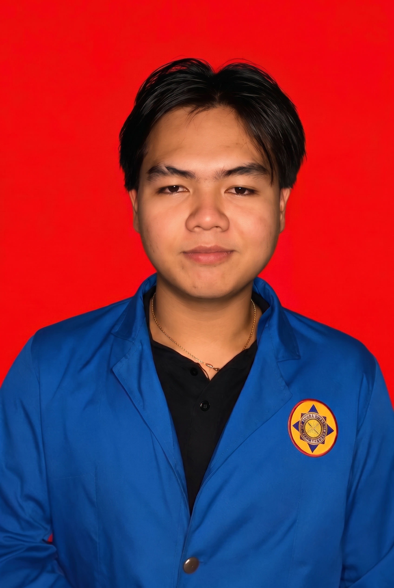
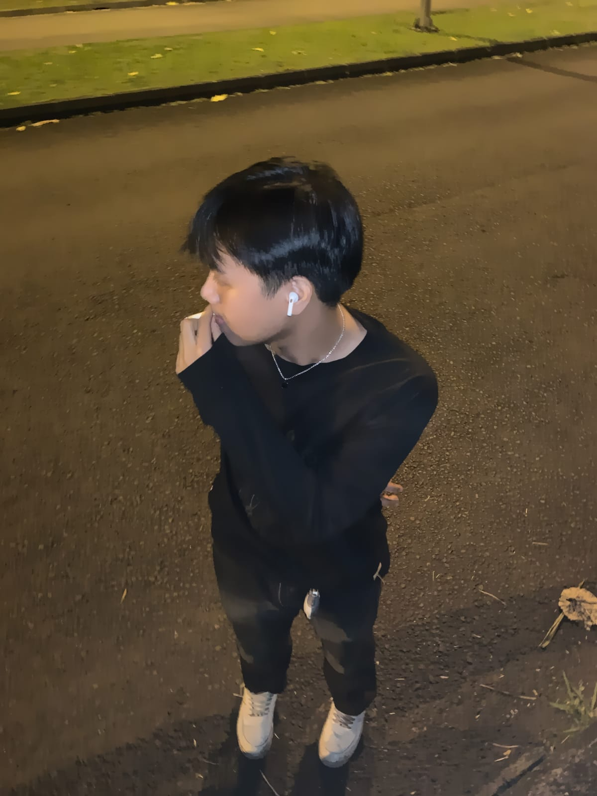

Halo, saya
Farhan Munfaridz
Information Systems Student | Web & Data Enthusiast
Mahasiswa Semester 7 Sistem Informasi, Universitas Pamulang (Pamulang, Tangerang Selatan)
Mahasiswa Semester 7 Sistem Informasi di Universitas Pamulang (Pamulang, Tangerang Selatan) yang fokus pada pengembangan aplikasi web, analisis data, sistem informasi bisnis, dan implementasi SDLC untuk memecahkan masalah nyata di lapangan.

01. Tentang Saya
Menjembatani Proses Bisnis & Solusi Teknologi

foto-farhan2.jpeg
Farhan Munfaridz • Semester 7
Saya adalah mahasiswa Semester 7 Program Studi Sistem Informasi di Universitas Pamulang (Pamulang, Tangerang Selatan). Ketertarikan utama saya berada di persimpangan antara pengembangan teknis (Laravel, Python, SQL) dengan analisis sistem, ERP, dan tata kelola TI (Audit & Monitoring).
Dengan pola pikir System Analyst & Developer, saya menjembatani kebutuhan alur kerja bisnis melalui pemodelan SDLC (System Development Life Cycle), perancangan basis data relasional, hingga rekayasa perangkat lunak modern yang terukur dampaknya.
Afiliasi
Universitas Pamulang - Semester 7
Lokasi
Pamulang, Tangerang Selatan
farhanmunfaridz@gmail.com
+62 878-7651-0930
02. Tech Stack & Keahlian
Perangkat & Kompetensi Teknis
Kombinasi teknologi pengembangan aplikasi, pengolahan data bisnis, serta analisis sistem & keamanan jaringan.
Web & Mobile Development
Pengembangan antarmuka responsif dan sistem web full-stack maupun aplikasi lintas platform.
Data & Backend
Pengelolaan basis data relasional, visualisasi analitik data operasional, dan integrasi ERP bisnis.
Systems, Network & Security
Perancangan arsitektur sistem, pemantauan log keamanan, tata kelola audit TI, dan optimasi teknis web.
03. Proyek Unggulan
Studi Kasus & Karya Terpilih
04. Hubungi Saya
Mari Berkolaborasi & Diskusi
Terbuka untuk kesempatan magang, kolaborasi pengembangan sistem informasi, proyek aplikasi web, maupun diskusi seputar analisis data.
Gmail / Email
farhanmunfaridz@gmail.comGitHub
github.com/Varxyy51